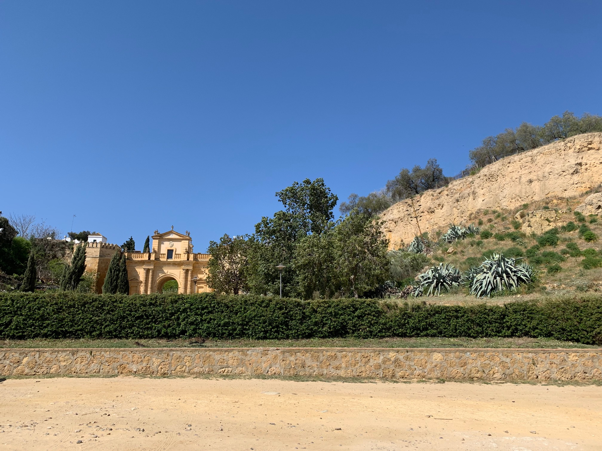

Nombre:
Apellidos:
Email:
Fecha de Nacimiento:
Información sobre mí
Hola buenas tardes, me llamo José Manuel López Valencia. Vivo en Carmona pero hasta hace unos años vivía en Villaverde del Río (una pequeña localidad de sevilla). He estudiado el Grado de Pedagogía y un Máster en Actividades Físicas en la Universidad de Sevilla. Terminado estos estudios, he decidido empezar a estudiar el grado superior de Desarrollo de Aplicaciones Multiplataforma. En la imagen inferior podemos ver uno de los monumentos de Carmona "La Puerta de Córdoba"
Imágen de Carmona:

Regreso